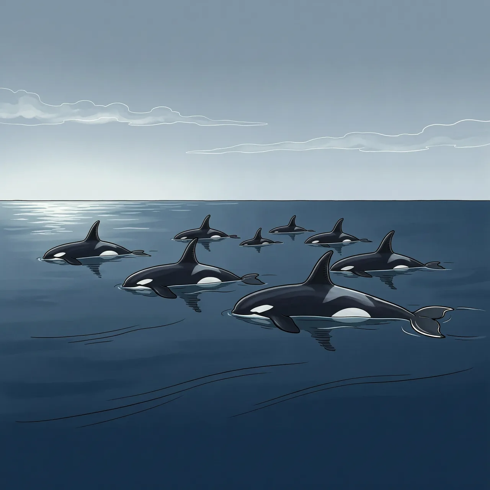
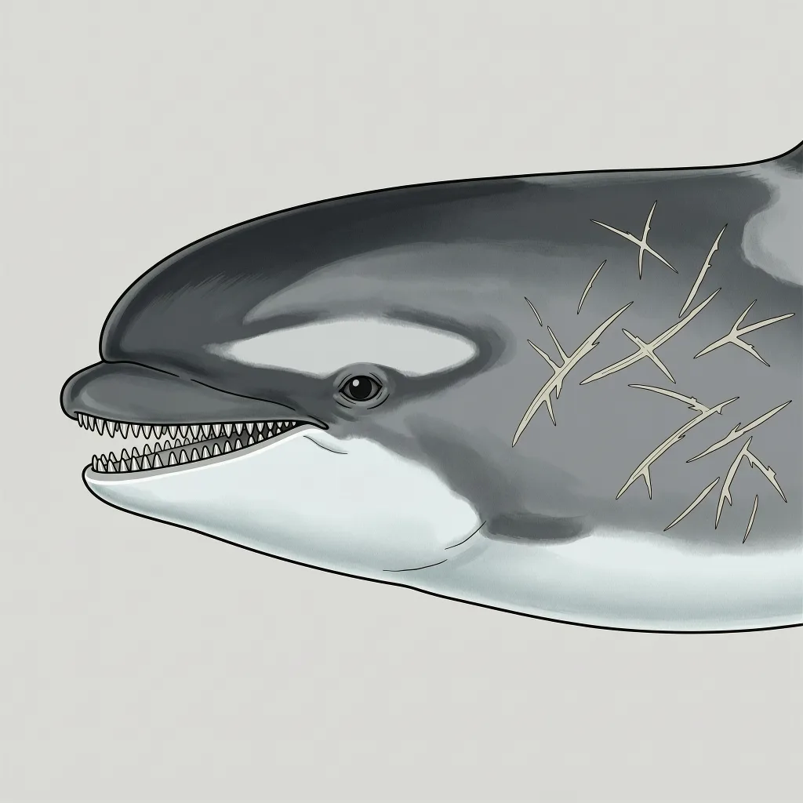

小虎鲸是海豚科中较小的一员，身躯深黑、头圆无吻，成年个体唇上有一道白线。它住在热带与亚热带的深水区，游得慢，很少靠近船只，白天常整群浮在水面休息。1874年，格雷仅凭大英博物馆的两具颅骨描述了它，直到1952年才有下一次记录。
花莲、台东、绿岛、兰屿和屏东垦丁的近海，每年大约只能目击小虎鲸一到两次；宜兰外海也只是偶见成群。这个物种真正的住处离岸更远：热带与亚热带海域中水深 500 到 2000 米的水层。小虎鲸总是成群待在那里，一般每群 5 到 30 只，偶尔能观察到 100 只以上的大群体；白天常能看到整群浮在海面上休息。近岸对它们来说不是住处，只是偶尔误入的边缘。
小虎鲸不靠速度。根据给野生个体装卫星发报器的观察，它的平均时速约 2.7 到 3.1 千米，总体上属于不太活跃的鲸豚，水面动作也少，在海上通常不主动靠近船只。它靠的是群体和嘴里的牙：上颌 8 到 11 对、下颌 11 到 13 对，牙齿呈圆锥状，有相当的噬咬与撕裂能力。海豚科里会把海龟和其他海洋哺乳类咬进嘴里的成员不多，小虎鲸是其中之一。圈养的小虎鲸攻击性极强，野外尚未观察到这种行为；不过在搁浅复健的救援现场，它一直是需要特别防备的鲸种。
人类认识小虎鲸的过程本身就很别扭。1874 年，英国动物学家约翰·爱德华·格雷仅凭大英博物馆中两具分别在 1827 年和 1874 年确定的颅骨，为这个物种做了描述。下一次记录要等到 1952 年，日本本州的捕鲸人碰上它，报上来的身份只是「罕见的海豚」；1954 年，日本动物学家山田文泽据此为小虎鲸正式命名。在海上认出一头活的小虎鲸也不容易：它头圆、没有突出的吻、体色深，常与其他海豚混淆，尤其是瓜头鲸；成年个体唇上会长出一道白线，腹部多为白色，胸口带着锚状花纹。
